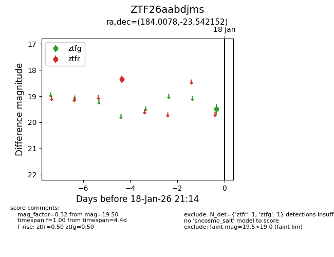
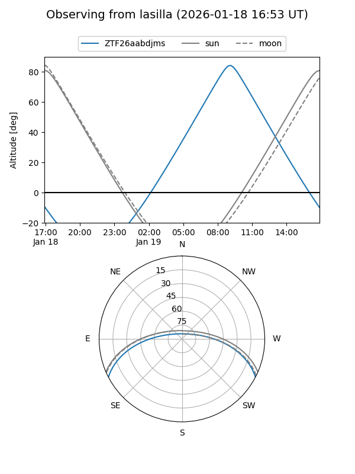
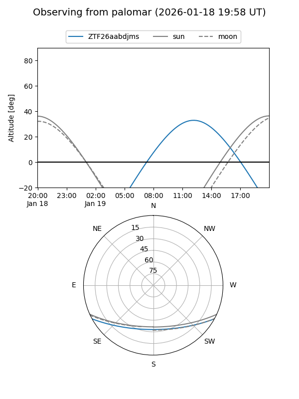

ZTF26aabdjms
Target ZTF26aabdjms at 2026-01-18 13:35
Aliases and brokers:
FINK: link
Lasair: link
ALeRCE: link
alt names
ZTF26aabdjms (ztf,fink_ztf)
Coordinates:
equatorial (ra, dec) = 184.0078,-23.54215
equatorial (HMS+DMS) = 12:16:01.87,-23:32:31.75
galactic (l, b) = (292.5307,+38.61345)
Flags:
Photometry:
last ztfg=19.50
1 ztfg detections
Lightcurve

Visibility


Additional plots